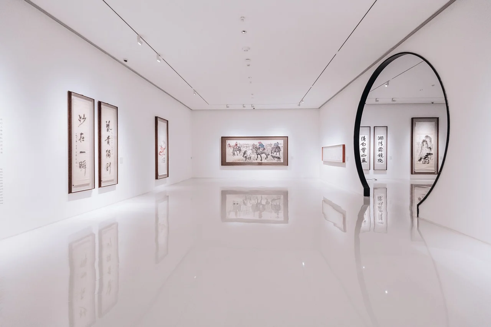

530 East 4th Street, New York, NY
Art Gallery was established by the late Pete Casso, MFA, to provide opportunities to artists entering the global art market. Mr. Casso was a visionary who founded the gallery on the principle that all artists benefit from having their artwork promoted by a professional gallery. Located in the heart of the famous Art district, Art Gallery occupies the ground floor of 530 East 4th Street. The gallery is frequented by art lovers looking to find and buy original artwork.
Need an expert opinion? Our dedicated team works to ensure that all the details of an artist’s representation are handled efficiently, from shipping artwork to the many kinds of artist promotion in which the gallery is involved. Drawing on both theoretical and practical knowledge of art, and on their considerable experience of the contemporary art world, each team member strives to combine their skills to ensure that artists and collectors always experience the gallery at its best.

Art Gallery is located in the heart of New York City’s renowned Art district, home to some of the world’s most prestigious galleries. Spanning the street level, our elegant, yet welcoming exhibition space is open and well-lit with 14-20 foot ceilings to allow all forms of artwork to shine. Great natural light and a versatile 6,000 square feet floor plan make the perfect venue for artists and art organizations to exhibit their work.
If you’re an art lover visiting New York, you won’t want to miss the experience of exploring the Art district, the gallery district internationally renowned for the diversity and talent it displays. Art Gallery is a great example of a gallery that showcases the variety and skill present in contemporary art – so be sure to visit us during your time in New York! Admission is free to all.